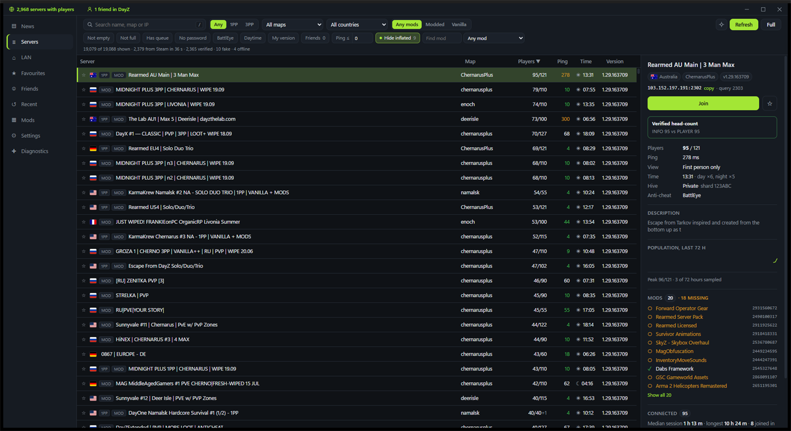
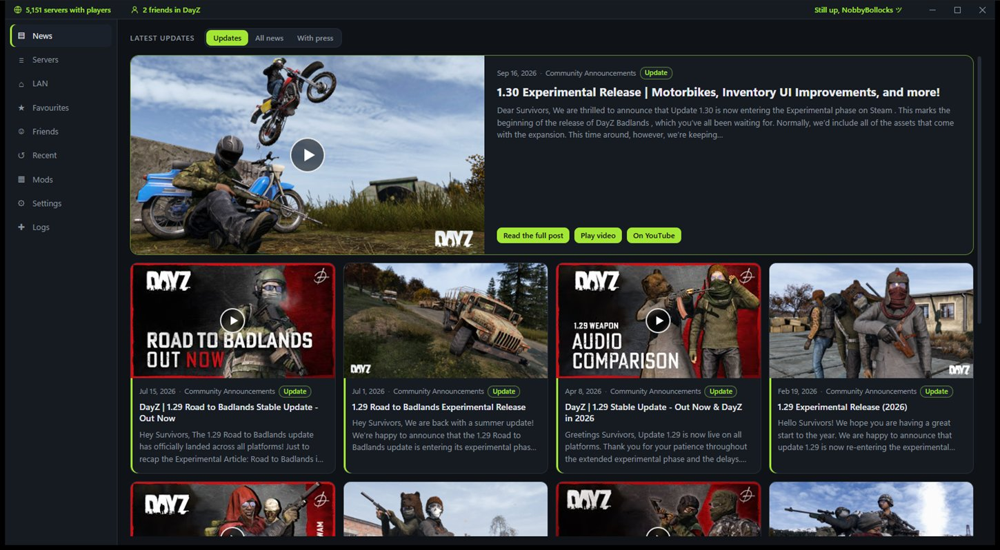

Player counts you can actually trust
A Windows launcher for DayZ Standalone. Every populated server is queried directly and cross-checked against Steam, so the servers padding their numbers are flagged and hidden. Missing mods install themselves, and the game starts through BattlEye the way it is supposed to.
Free · Windows 10 and 11 · 7.5 MB installer · no account, no telemetry

Most DayZ servers lie about their player count
More than half of community servers inflate the number they report, so a list that simply repeats it is useless. This launcher checks instead of trusting.
Asked, not assumed
Every populated server gets a direct A2S_PLAYER query. The real head-count is what you see.
Cross-checked with Steam
Steam knows which servers have authenticated players. A server Steam says is empty but that claims a full lobby is flagged.
Fabricated lists caught
Player lists where everyone shares a handful of session lengths are marked as synthetic rather than counted.
Hidden by default
Inflated and unverifiable servers are filtered out unless you ask to see them. It is one toggle.
Measured, not claimed
Taken on the reference machine — cold start and memory at v0.1.19 and v0.1.23 with the whole cached list loaded, the refresh as the median of five passes at v0.1.37. Every release is measured against a written budget before it ships, and the numbers are in the repository.
What it does
The things a launcher is for, done properly.
Finding a server
- Steam's own list, no API key and no third-party service.
- Filters that matter: perspective, official or community hive, map, country, mod, queue, password, daytime, version, ping and friends — and maps by the name people use, so "Livonia" finds the ones the protocol calls
enoch. - Country flags from an offline table — no lookup service, no requests per row.
- Find servers by mod, from the mods actually seen on live servers.
- Live details: mods with installed ticks, 72 h population history, and the other servers at the same address.
- LAN discovery and direct connect by address.
Getting into the game
- Missing mods install themselves through Steam, with the
!Workshoplinks made the way the official launcher makes them. - Wait for a free slot on a full server and join the moment one opens.
- Launch profiles: saved sets of launch options, picked per join.
- Friends: who is in DayZ, on which server, with a Join button.
- Mod manager: update, unsubscribe, and clean up stale Workshop links.
- Signed automatic updates, verified before anything is installed.
Nothing to sign up for
No account, no API key, no telemetry, no analytics. Here is everything it talks to, in full:
- Steam, on your own machine, for the server list, the Workshop and your friends.
- The game servers, directly, to check ping, mods and who is really on them.
- GitHub, for the update manifest and the installer.
- Steam's news feed and its picture CDN, for the home page — with that page switched off, never.
- YouTube, only for the previews on that same page, and only while a video is playing.
- DZSA's public server list, only when Steam is unavailable and you ask for it.
Your cache, favourites, history and settings stay in your own app-data folder. There is a Logs page showing exactly what the launcher has been doing, which you can read, copy, mute by area, or switch off completely.
The home page
DayZ's own news, with the updates that matter marked unread — and a switch in Settings to remove the page entirely.

Get it
Windows 10 or 11, 64-bit. Steam running and signed in, DayZ installed through Steam.